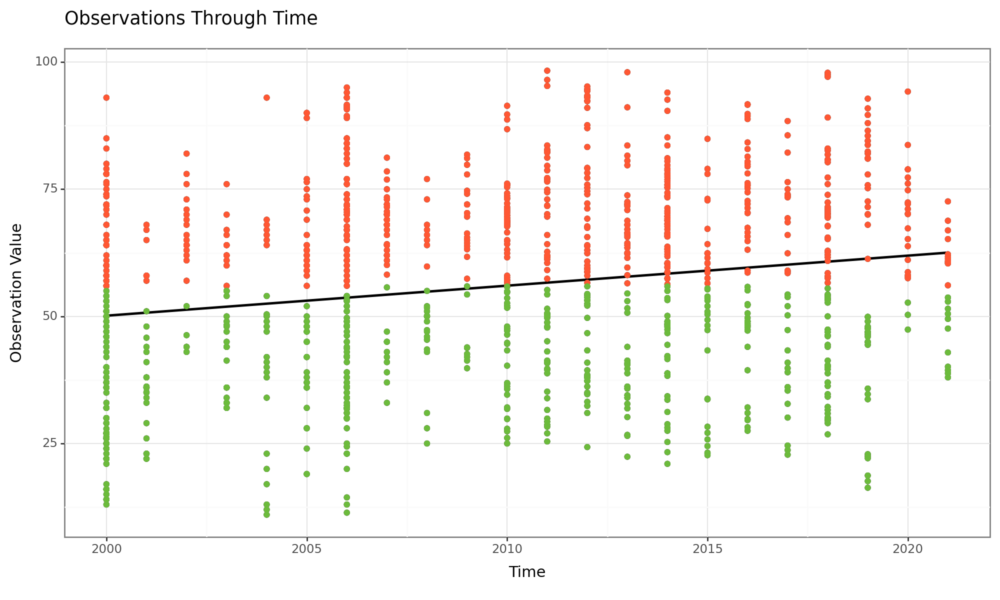
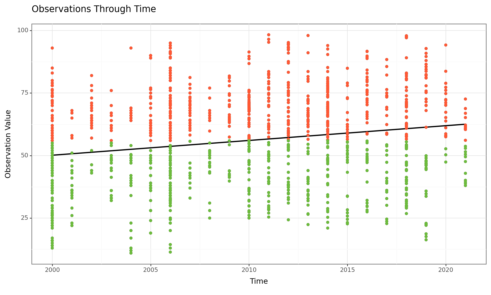
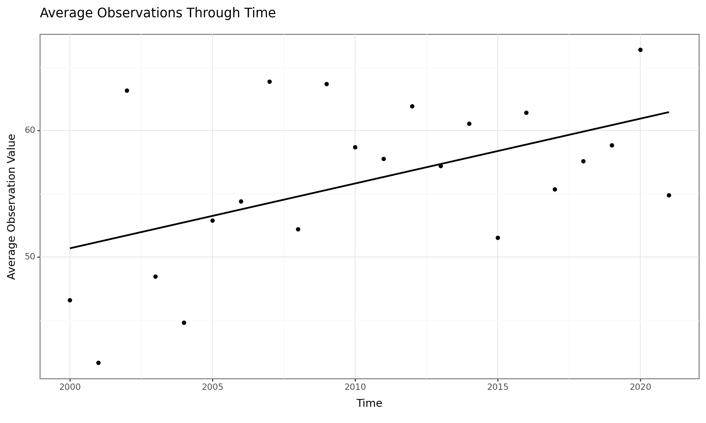
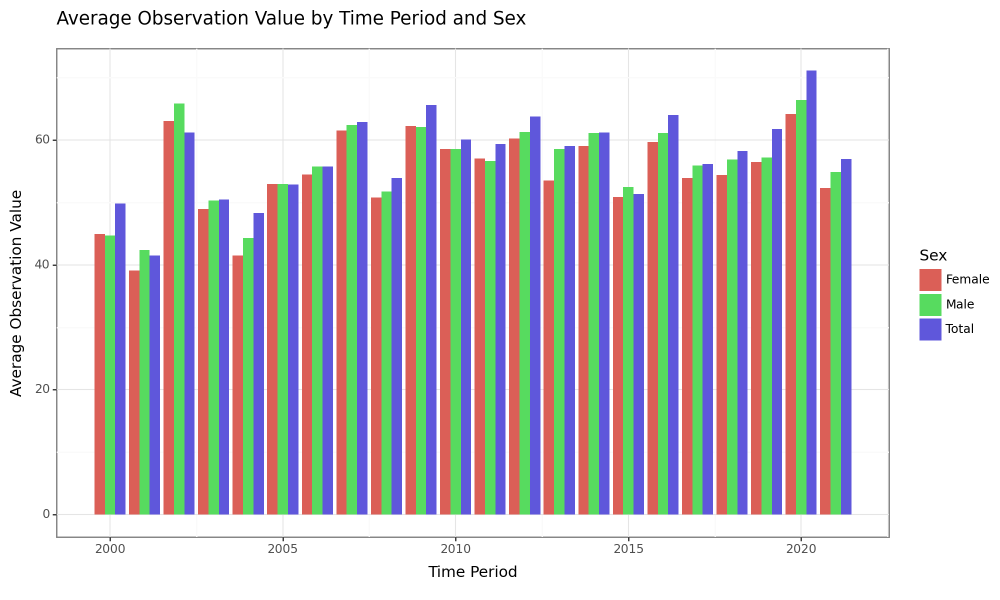
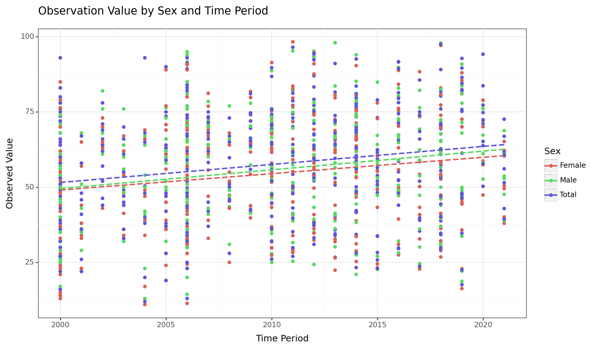

Acute Respiratory Disease (ARD) encompasses a range of infectious and non-infectious respiratory illnesses affecting the upper and lower respiratory tract and poses a significant global health burden, particularly among vulnerable populations. This dashboard’s objective is to examine the variables that most significantly affect acute respiratory illnesses in kids under the age of five. We will investigate the relationship between several factors and the incidence of acute respiratory infections by using a dataset that we obtained from the UNICEF website. Time period, country, and sex are the relevant factors. We will analyze the correlations between these variables and the observed percentage prevalence rates in our analysis.

This time series graph depicts trends in Acute Respiratory Infection (ARI) prevalence among children under five. The x-axis represents time, while the y-axis shows the percentage of ARD observations. The graph reveals diverse patterns. Some lines show a consistent increase in ARD observations over time, while others show a decrease. There are also lines with a fluctuating trend, indicating periods with higher and lower observations throughout the timeframe.

This graph displays the average observations of Acute Respiratory Diseases (ARD) in children under five across various years. The x-axis clearly shows time in years, though the specific range isn’t provided in the graph itself. The y-axis represents the percentage of ARD observations, but again, the specific range of percentages is not displayed.
Several lines appear on the graph, each representing the trend in ARD observations over time. We can confidently say that there’s no single dominant trend for all the lines. Some lines show a clear upward trend, indicating increasing ARD observations over the years. Conversely, other lines display a downward trend, suggesting a decrease in ARD observations over time. There are also lines with a fluctuating pattern, with distinct peaks and valleys throughout the years.

This graph displays the distribution of average observations of acute respiratory diseases (ARD) in children under five years old across different countries. The x-axis represents the percentage of ARD observations, but the specific range of percentages isn’t labeled on the graph. The y-axis shows the number of countries.
The graph depicts a distribution with several peaks and valleys. There seems to be a concentration of countries with moderate ARD observations (around the center of the x-axis), with a tapering off towards both very high and very low ARD observations.

This graph displays the distribution of average observations of Acute Respiratory Infections (ARI) among children under five years old in various countries. The x-axis represents the percentage of ARD observations, but the specific range of percentages isn’t shown on the graph. The y-axis shows the number of countries.
The data reveals a non-uniform distribution of ARD observations across countries. There appears to be a peak around a certain percentage of ARD observations (we can’t determine the exact value without the axis labels), suggesting a concentration of countries with a similar prevalence of ARD in children. The distribution then tapers off towards both ends of the x-axis, indicating a decline in the number of countries with very high or very low ARD observations.

Absolutely! Here’s a description of the scatter plot you sent, focusing solely on the data presented in the image:
This scatter plot depicts the relationship between two factors influencing Acute Respiratory Disease (ARD) in children under five. The x-axis represents one factor, likely a socioeconomic or environmental factor, but the specific variable isn’t labeled in the graph. The y-axis represents the percentage of ARD observations.
Several data points are scattered throughout the graph, indicating a variety of observations. It’s difficult to discern a clear linear relationship between the two factors. Some data points show high ARD observations coinciding with high values on the x-axis, while others show high ARD observations at lower values on the x-axis. There seems to be a spread of data points across the entire range of both axes.
observations of ARDs among children under 5 display diverse trends across different countries, indicating significant variability in ARD prevalence globally. The first takeaway from this graph is the infection rates across the countries. We can classify them as follows -
High Infection Rates: Notable countries with high rates of ARD infections among children include Argentina (94.18%), Belarus (91.76%), Bosnia and Herzegovina (88.12%), Cuba (93.81%), Georgia (73.60%), Panama (81.63%), Serbia (91.3%), Ukraine (92.17%), Uruguay (89.9%), Mexico (72.77%), Thailand (82.28%) and Venezuela (72%).
Moderate to High Infection Rates: Additionally, countries like India (69.24%) and Indonesia (69.55%) show moderate to high rates of ARD infections among children.
Moderate Infection Rates: Many countries fall within the moderate range of ARD infections, such as Albania (67.03%), Armenia (42.46%), Bangladesh (34.52%), Brazil (49.73%), Colombia (61.19%), Kenya (56.86%), and Philippines (57.41%), among others.
Low Infection Rates: Some countries exhibit relatively lower rates of ARD infections among children, including Botswana (14.33%), Chad (20.63%), Somalia (17.72%), and Togo (34.56%), among others.
This graph also allows us to draw a link between countries and infection rates. Examining acute respiratory disease (ARD) prevalence rates across countries unveils distinct regional patterns. Countries in sub-Saharan Africa, such as Angola, Benin, and Burkina Faso, showcase elevated ARD prevalence rates compared to other regions. This suggests common regional factors, including environmental conditions, healthcare infrastructure, and socio-economic status, contributing to this trend. Surprisingly, disparities emerge when correlating ARD prevalence rates with economic indicators. Higher-income countries like Argentina and Cuba demonstrate relatively higher ARD prevalence rates, while lower-income countries like Botswana and Somalia exhibit lower rates. This complex relationship challenges the assumption of a straightforward correlation between economic development and health outcomes. Furthermore, countries with robust healthcare infrastructure, such as Costa Rica and Thailand, coexist with high ARD prevalence rates, raising questions about healthcare access and quality. Environmental factors, including air quality and sanitation, also influence ARD prevalence rates, with countries like Bangladesh and India showing higher rates due to population density and pollution. Conversely, countries with better environmental conditions, like Bhutan and Mongolia, exhibit lower ARD prevalence rates. Additionally, socio-cultural factors and health behaviors play a significant role, as evidenced by variations in ARD prevalence rates between countries like Japan and South Korea, with high health literacy and vaccination coverage, and those like Afghanistan and Niger, with lower health literacy and limited healthcare access.
Conclusion
We can sum up by stating that this analysis highlights the intricate interactions between many factors that affect the prevalence rates of ARD in different nations. Although gender does not appear to be a key driver, geographical differences and variations in prevalence rates over time demonstrate the complex nature of the burden associated with ARD. These results highlight the necessity of focused public health initiatives that go beyond merely resolving economic inequality. Considering broader social, environmental, and healthcare-related issues is necessary to successfully reduce the global burden of ARDs in children.Addressing the root causes of ARD prevalence requires a holistic approach that considers the interconnectedness of factors such as environmental pollution, access to quality healthcare, socio-economic status, and cultural practices. For instance, in regions with poor air quality and inadequate sanitation, efforts to improve environmental conditions and promote hygiene practices can help reduce the incidence of ARDs. Similarly, investments in healthcare infrastructure, including access to vaccinations, diagnostic tools, and treatment services, are essential for early detection and management of ARDs. Furthermore, social determinants of health, such as education, income inequality, and housing conditions, play a crucial role in shaping ARD prevalence rates. Targeted interventions aimed at improving health literacy, reducing poverty, and providing safe living environments can contribute to long-term reductions in ARD burden. Additionally, promoting behavioral changes, such as smoking cessation and breastfeeding promotion, can further reduce the risk of ARDs among children. In conclusion, addressing the complex challenges associated with ARD prevalence requires a comprehensive approach that integrates interventions across multiple sectors. By addressing social, environmental, and healthcare-related factors in tandem, policymakers and public health practitioners can work towards achieving significant reductions in ARD burden and improving the overall health and well-being of children worldwide.